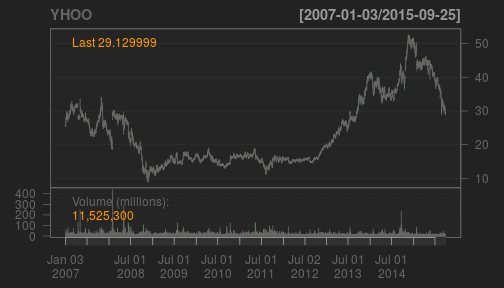

Developing Data Products - Course Project Presentation
Yong Kheng Goh (goh.yongkheng@gmail.com)
28 September 2015
This presentation is being created as part of the course project for the coursera developing data products course.
You can get the demo of the app at shinyapps.io:
https://yongkheng.shinyapps.io/bursamon
Bursamon - The Data
The app is based on the daily stock prices from Yahoo!Finance. The stock counters are identified by codes. For example the code '6033.KL' is for the stock Petronas Gas Berhad.
library(quantmod)
symbol = '6033.KL'
getQuote(symbol, what=yahooQF('Name'))
## Trade Time Name
## 6033.KL 2015-09-25 04:50:00 PETRONAS GAS BHD
Bursamon - The Chart
The chart produced in the app is predefined. Clients are welcome to feedback on the type of chart that they would like to have in the Bursamon app. We will customize for you! Here is a candlestick chart.
getSymbols("YHOO")
chartSeries(YHOO, type='candlestick')
